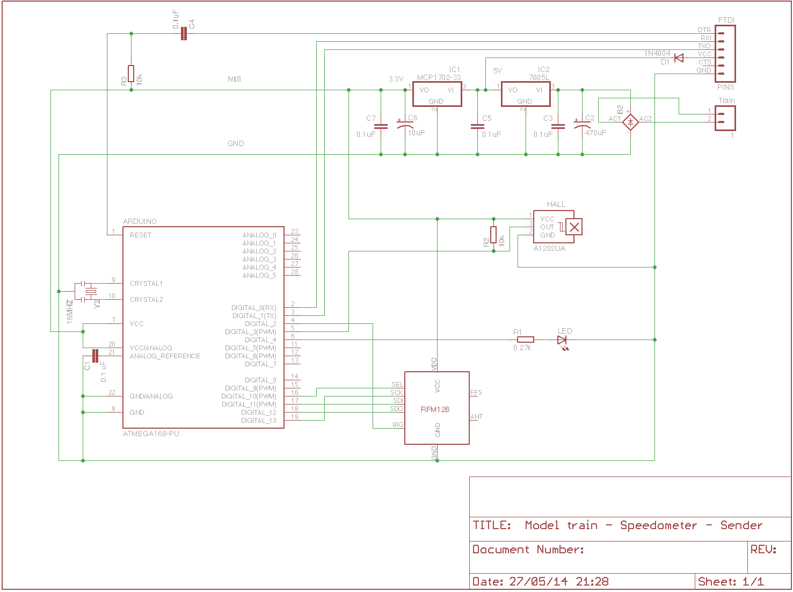

What is it?
Ever wanted to be able to see the real life speed of your model train for free? Now you can! This project consists of 2 modules the receiver and the sender. Both are based on the ATMEGA microcontroller with arduino bootloader and use the RF12B transceiver to communicate wirelessly. Together they form a easy to use speedmeter. We used a Märklin H0 model train as a example.
Features
- Can display imperial and metric units.
- Works with all brands or scales (Marklin, Fleischmann, Lima, Pico etc)
- Source is on GitHub
Demo
Parts list
Receiver- ATMEGA328-PU or similar with a arduino bootloader.
- RF12B transceiver
- 2 resistors of 10k
- 1 resistor of 0.27k
- 2 resistors of 5k
- 5 capacitors of 0.1uF
- 1 capacitor of 10uF
- 1 capacitor of 470uF
- 16mhz resonator
- Diode
- 7805L regulator
- MCP1702-33 positive voltage regulator
- LCD with HD44780 or similar controller
- ATMEGA328-PU or similar with a arduino bootloader.
- RF12B transceiver
- 2 resistors of 10k
- 1 resistor of 0.27k
- 5 capacitors of 0.1uF
- 1 capacitor of 10uF
- 1 capacitor of 470uF
- 16mhz resonator
- 7805L regulator
- MCP1702-33 positive voltage regulator
- Diode
- HAL sensor(A1202UA)
- Tiny magnet
- A train car with enough room inside to hold everything.
- Drag contact to power the sender
Schematics
Receiver Senderx {kind=link}
{kind=link}
Code
You will need to install the JeeLib library. The schemes below depend on it.
- Download the ZIP file from github
- From the Arduino IDE: Sketch -> Import Library... -> Add Library...
- Restart the Arduino IDE
Now you can open the examples below in your Arduino IDE.
Receiver scheme Sender schemeCurrently the code is setup to work with Marklin H0 as a default. If you want to make this work with your brand or scale you will need to edit the Sender.ino file in 2 locations. In the top of this file you see 2 constants defined as MODEL_SCALE_MM and WHEEL_DIAMETER_MM. The first constant is the scale of your model and the second is the diamater of the wheel. Change these values to reflect your model.
// Currently set to Marklin H0 scale 1=87.
//
const float MODEL_SCALE_MM = 87;
const float WHEEL_DIAMETER_MM = 11.9;